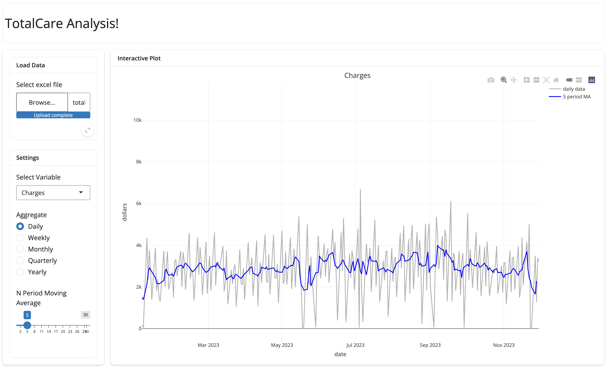

### ----- Load packages ----
library(shiny)
library(gridlayout)
library(bslib)
library(tidyverse)
library(plotly)
### ---- Functions ----
# create function to load data
load_data <- function(path, tab = 1) {
readxl::read_excel(path, sheet = tab) %>%
mutate(date = mdy(date))
}
# create function to aggregate data
aggregate_data <- function(data, aggregate) {
# standardize data
# -> so response variable is always called the same thing
data_standard=data %>%
rename(y = 2)
# aggregate data based on different time frames
data_agg = if (identical(aggregate, "daily")) {
data_standard
} else if (identical(aggregate, "weekly")){
data_standard %>%
group_by(year(date), week(date)) %>%
summarize(date = max(date),
y = sum(y)) %>%
ungroup %>%
select(date, y)
}else if (identical(aggregate, "monthly")){
data_standard %>%
group_by(year(date), month(date)) %>%
summarize(date = max(date),
y = sum(y)) %>%
ungroup %>%
select(date, y)
}else if (identical(aggregate, "quarterly")){
data_standard %>%
group_by(year(date), quarter(date)) %>%
summarize(date = max(date),
y = sum(y)) %>%
ungroup %>%
select(date, y)
}else{
data_standard %>%
group_by(year(date)) %>%
summarize(date = max(date),
y = sum(y)) %>%
ungroup %>%
select(date, y)
}
return(data_agg)
}
# create function to plot data
plot_data <- function(data, var, aggregate, n) {
# create base plotly
# -> calculate MA first
y_ma = data$y %>% forecast::ma(order = n)
p = data %>%
plot_ly() %>%
add_lines(x = ~date,
y = ~y,
text = ~paste0(date, "\n", ifelse(var %in% c("office_visits", "new_patients"), "", "$"), scales::comma(y)),
color = I("grey70"),
name = ~paste0(aggregate, " data")) %>%
add_lines(x = ~date,
y = y_ma,
text = ~paste0(n, " period MA: ", ifelse(var %in% c("office_visits", "new_patients"), "", "$"), scales::comma(as.numeric(y_ma))),
color = I("blue"),
name = paste0(n, " period MA"))
# conditionally add axis title and main title
if (identical(var, "charges")) {
p = p %>%
layout(title = "Charges",
yaxis = list(title = "dollars"))
} else if (identical(var, "collections")) {
p = p %>%
layout(title = "Collections",
yaxis = list(title = "dollars"))
} else if (identical(var, "new_patients")) {
p = p %>%
layout(title = "New Patients",
yaxis = list(title = "patients"))
} else if (identical(var, "office_visits")) {
p = p %>%
layout(title = "Office Visits",
yaxis = list(title = "visitors"))
} else if (identical(var, "shockwave")) {
p = p %>%
layout(title = "Shockwave",
yaxis = list(title = "dollars"))
} else if (identical(var, "weight_loss")) {
p = p %>%
layout(title = "Weight Loss",
yaxis = list(title = "dollars"))
} else {
p = p %>%
layout(title = "Shockwave + Weightloss",
yaxis = list(title = "dollars"))
}
return(p)
}Dashboard

Code
Pre code
UI
### ---- Define UI ----
ui <- grid_page(
layout = c(
"header header",
"sidebar plot"
),
row_sizes = c(
"100px",
"1fr"
),
col_sizes = c(
"250px",
"1fr"
),
gap_size = "1rem",
grid_card_text(
area = "header",
content = "TotalCare Analysis!",
alignment = "start",
is_title = FALSE
),
grid_card(
area = "sidebar",
card_body(
card(
full_screen = TRUE,
card_header("Load Data"),
card_body(
fileInput(inputId = "target_upload",
label = "Select excel file",
accept = ".xlsx")
)
),
card(
full_screen = TRUE,
card_header("Settings"),
card_body(
selectInput(
inputId = "var",
label = "Select Variable",
choices = list(
"Charges" = "charges",
"Collections" = "collections",
"New Patients" = "new_patients",
"Office Visits" = "office_visits",
"Shockwave" = "shockwave",
"Weight Loss" = "weight_loss",
"Shockwave + Weight Loss" = "shockwave_and_weight_loss"
)
),
radioButtons(
inputId = "aggregate",
label = "Aggregate",
choices = list(
"Daily" = "daily",
"Weekly" = "weekly",
"Monthly" = "monthly",
"Quarterly" = "quarterly",
"Yearly" = "yearly"
),
width = "100%"
),
sliderInput(
inputId = "n",
label = "N Period Moving Average",
min = 2,
max = 30,
value = 5,
width = "100%",
step = 1
)
)
)
)
),
grid_card(
area = "plot",
card_header("Interactive Plot"),
card_body(
plotlyOutput(
outputId = "plot",
width = "100%",
height = "100%"
)
)
)
)Server
### ---- Define server ----
server <- function(input, output) {
data_all <- reactive({
# read in file
# -> skip running below code before a file is loaded
file = input$target_upload
req(file)
# load all data
tabs = c("charges", "collections", "new_patients", "office_visits", "shockwave", "weight_loss")
data_tmp = tabs %>% map(\(tab) load_data(file$datapath, tab = tab))
names(data_tmp) = tabs
# combine shockwave and weight loss data
data_tmp$shockwave_and_weight_loss = data_tmp$shockwave %>%
full_join(data_tmp$weight_loss, by = join_by(date)) %>%
mutate(shockwave_and_weight_loss = shockwave + weight_loss) %>%
arrange(date) %>%
select(date, shockwave_and_weight_loss)
return(data_tmp)
})
output$plot <- renderPlotly({
data_all()[[input$var]] %>%
aggregate_data(aggregate = input$aggregate) %>%
plot_data(var = input$var, aggregate = input$aggregate, n = input$n)
})
}Combine
### ---- Run app ----
shinyApp(ui, server)